Main Archaeological Complex - Sarnath
• Ancient Buddhist Heritage Site
• The Place Where Lord Buddha Gave His First Sermon
• Ancient Buddhist Heritage Site
• The Place Where Lord Buddha Gave His First Sermon
 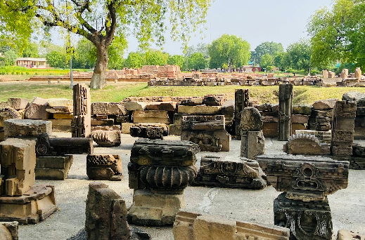
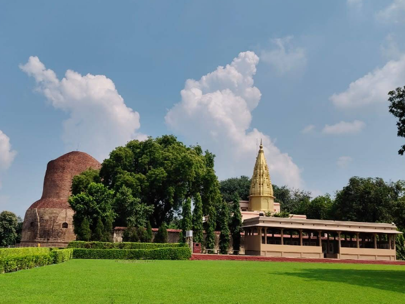
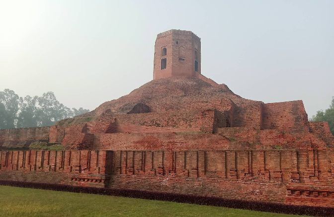
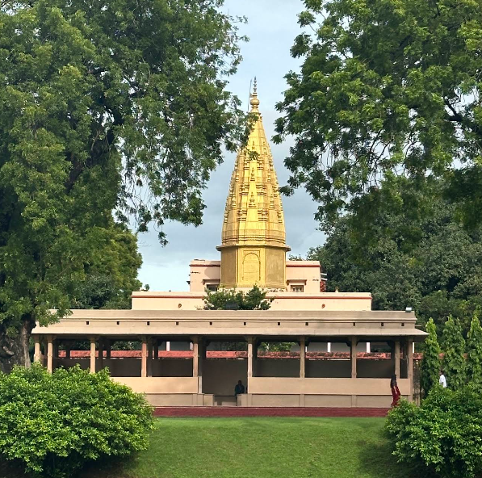
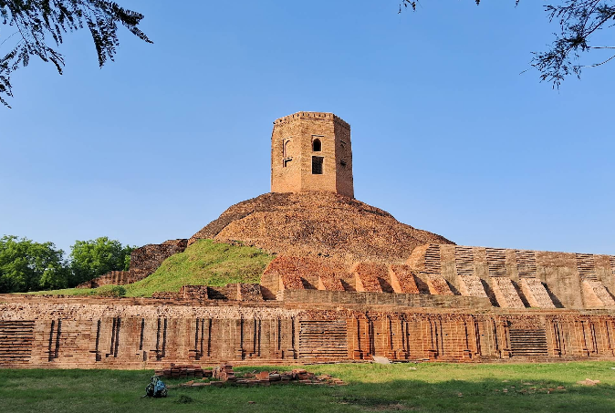
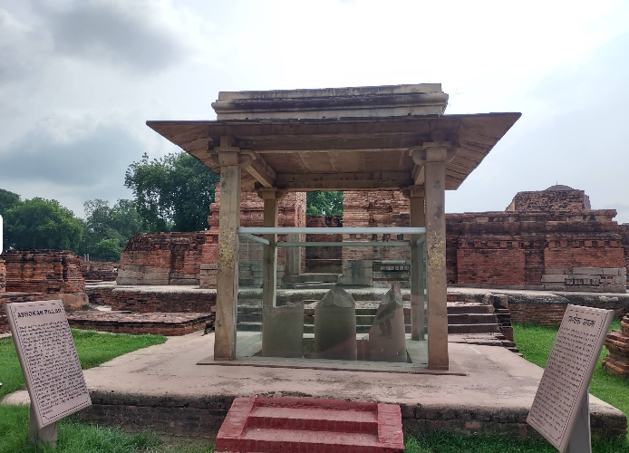
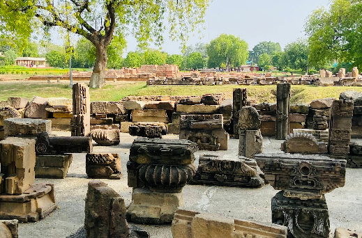
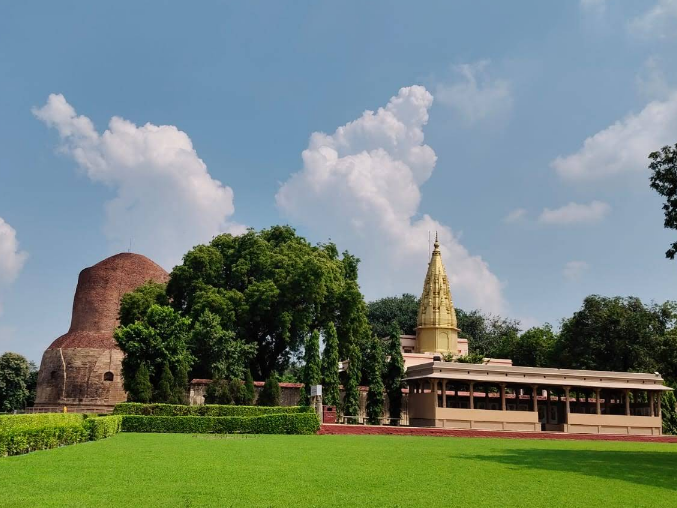
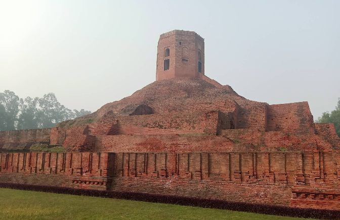
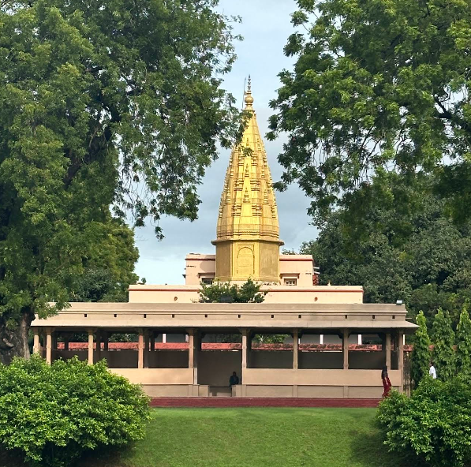
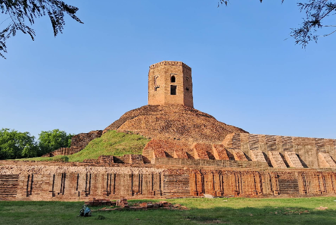
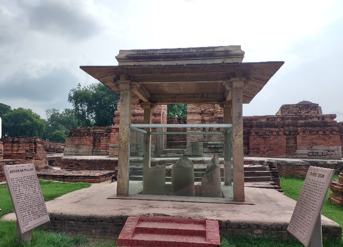
The Main Archaeological Complex of Sarnath stands as one of the most sacred Buddhist pilgrimage sites in the world. It marks the location where Lord Buddha delivered his first sermon — known as the “Dhammacakkappavattana Sutta” — after attaining enlightenment at Bodh Gaya. This sermon set in motion the “Wheel of Dharma”, making Sarnath a cornerstone of Buddhist philosophy.
Today, the site is a serene and spiritually charged area managed by the Archaeological Survey of India (ASI), preserving the ruins of ancient monasteries, stupas, and sculptures that date back over 2,500 years.
Sarnath, known in ancient texts as “Isipatana,” gained prominence in the 6th century BCE when Buddha shared his first teachings with five disciples. Emperor Ashoka later visited the site in the 3rd century BCE and built several stupas, monasteries, and the famous Ashokan Pillar with its iconic Lion Capital, which now serves as the National Emblem of India.
Over centuries, the site flourished as a major center of learning and spiritual practice until it was destroyed during the 12th century by foreign invasions. Excavations during the 19th century helped rediscover and preserve its invaluable relics.
Adjacent to the complex is the Sarnath Archaeological Museum — India’s oldest site museum, established in 1910. It exhibits magnificent stone sculptures, inscriptions, and Buddhist relics from the Mauryan, Kushan, and Gupta periods.
The highlight of the museum is the original Ashokan Lion Capital, along with statues of Buddha in various mudras (postures), and intricate carvings depicting the life of the Enlightened One.
The Main Archaeological Complex is located in Sarnath, about 10 km northeast of Varanasi city center. It is easily accessible by road, with frequent taxis, autos, and buses available from Varanasi Junction and Godowlia. The nearest airport is Lal Bahadur Shastri International Airport, about 25 km away.